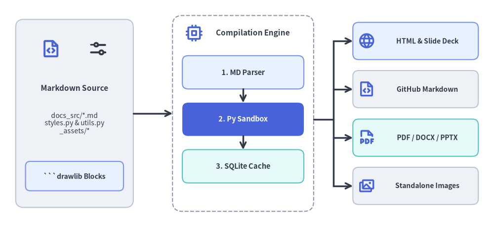
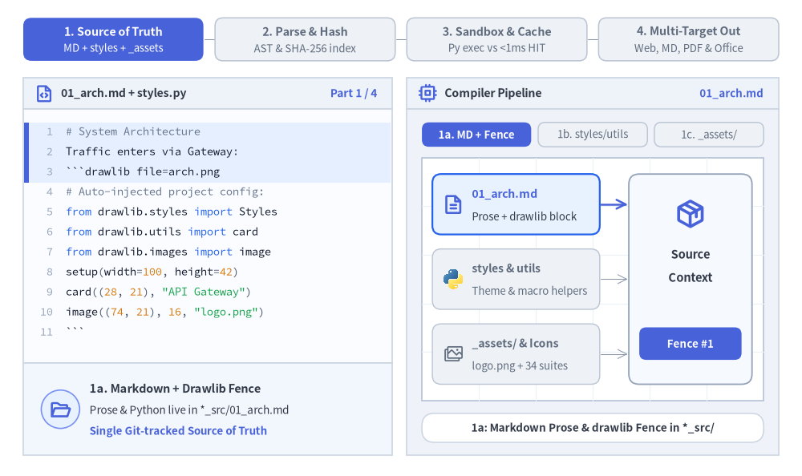
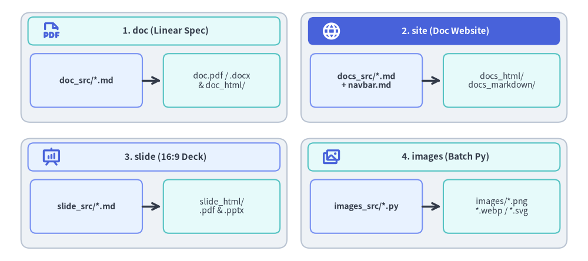

Illustrated Documentation as Code: The Drawlib Build Engine
Drawlib unifies technical documentation and architectural illustrations under a single "Illustrated Documentation as Code" pipeline. Instead of managing out-of-sync vector files, manually exporting diagrams from third-party tools, or checking in opaque binary assets, you author declarative Python drawing blocks directly inside standard Markdown documents.

Source Code
from drawlib.canvas import save, setup
from drawlib.icons import phosphor
from drawlib.lines import line
from drawlib.shapes import rectangle
from drawlib.styles import Styles
from drawlib.text import text
setup(width=126, height=58)
# Left: Markdown Source
rectangle((19, 29), width=30, height=48, style=Styles.Neutral.patch(shape_r=2.0))
phosphor.file_code((13, 45.5), width=5.2, style=Styles.PrimaryBold)
phosphor.sliders_horizontal((25, 45.5), width=5.2, style=Styles.DarkBold)
text((19, 35.5), "Markdown Source", style=Styles.DarkBold.patch(text_size=11.0))
text((19, 26.5), "docs_src/*.md\nstyles.py & utils.py\n_assets/*", style=Styles.Dark.patch(text_size=10.0))
rectangle(
(19, 13.0),
width=25,
height=7.5,
style=Styles.PrimaryNeutral.patch(shape_r=1.2),
text="```drawlib Blocks",
text_style=Styles.DarkBold.patch(text_size=10.0),
)
# Center: Drawlib Compilation Pipeline Container
rectangle((62, 29), width=36, height=50, style=Styles.MutedDashed.patch(shape_r=2.5))
phosphor.cpu((49.5, 49.5), width=4.6, style=Styles.PrimaryBold)
text((64.5, 49.5), "Compilation Engine", style=Styles.DarkBold.patch(text_size=11.0))
rectangle(
(62, 39.5),
width=31,
height=8.5,
style=Styles.PrimaryNeutral.patch(shape_r=1.5),
text="1. MD Parser",
text_style=Styles.DarkBold.patch(text_size=10.5),
)
line((62, 35.25), (62, 31.75), arrow_head="->", style=Styles.DarkBold)
rectangle(
(62, 27.5),
width=31,
height=8.5,
style=Styles.PrimaryFlat.patch(shape_r=1.5),
text="2. Py Sandbox",
text_style=Styles.WhiteBold.patch(text_size=10.5),
)
line((62, 23.25), (62, 19.75), arrow_head="->", style=Styles.DarkBold)
rectangle(
(62, 15.5),
width=31,
height=8.5,
style=Styles.SecondaryNeutral.patch(shape_r=1.5),
text="3. SQLite Cache",
text_style=Styles.DarkBold.patch(text_size=10.5),
)
# Right: Publishing Targets
targets = [
(47.5, "HTML & Slide Deck", Styles.PrimaryNeutral, phosphor.globe),
(35.2, "GitHub Markdown", Styles.Neutral, phosphor.file_code),
(22.8, "PDF / DOCX / PPTX", Styles.SecondaryNeutral, phosphor.file_pdf),
(10.5, "Standalone Images", Styles.Neutral, phosphor.images),
]
for ty, label, st, icon_fn in targets:
rectangle((106, ty), width=32, height=9.5, style=st.patch(shape_r=1.5))
icon_fn((93.5, ty), width=4.4, style=Styles.PrimaryBold)
text((109.0, ty), label, style=Styles.DarkBold.patch(text_size=10.0))
# Connectors: Source -> Pipeline -> 4 Publishing Targets
line((34, 29), (44, 29), arrow_head="->", style=Styles.DarkBold)
line((80, 27.5), (85, 27.5), style=Styles.DarkBold)
line((85, 10.5), (85, 47.5), style=Styles.DarkBold)
for ty, _, _, _ in targets:
line((85, ty), (90, ty), arrow_head="->", style=Styles.DarkBold)
save()
1. End-to-End Compilation Lifecycle
Every build command executes a deterministic four-stage pipeline: resolving Markdown prose, shared styles.py / utils.py helpers, and _assets/ media from *_src/, computing a content-addressed SHA-256 digest against .drawlib/cache.db, executing cache misses inside an isolated canvas.clear() Python sandbox (while restoring cache hits in under a millisecond), and emitting web, GitHub Markdown, vector PDF, and editable MS Office artifacts from the exact same source:

Source Code
from __future__ import annotations
from drawlib.anim import Animation
from drawlib.canvas import save, setup
from drawlib.icons import code as code_icons
from drawlib.icons import data, phosphor, workspace
from drawlib.lines import line
from drawlib.shapes import circle, rectangle
from drawlib.smartarts import SourceCode, SourceCodeStyles
from drawlib.styles import Styles
from drawlib.text import text
W, H = 138.0, 82.0
setup(width=W, height=H)
anim = Animation(fps=10.0, loop=0)
BT = "`" * 3
CODE_TEXT_SIZE = 10.0
PT_TO_CANVAS = W / 720.0
FONT_CANVAS = CODE_TEXT_SIZE * PT_TO_CANVAS
LINE_H = FONT_CANVAS * 1.8
PAD_Y = FONT_CANVAS * 1.2
CODE_STYLES = SourceCodeStyles.get("default", font_lang="en", text_size=CODE_TEXT_SIZE).patch(
box_style=Styles.Neutral.patch(shape_fill_color=(0, 0, 0, 0), shape_line_width=0),
)
PANE_HEADER = Styles.Neutral.patch(
shape_fill_color=(238, 243, 250),
shape_line_color=(203, 213, 225),
shape_line_width=1.2,
shape_r=0.0,
)
EDITOR_BODY = Styles.Neutral.patch(
shape_fill_color=(250, 252, 255),
shape_line_color=(203, 213, 225),
shape_line_width=1.2,
shape_r=0.0,
)
TAKEAWAY_BODY = Styles.Neutral.patch(
shape_fill_color=(242, 246, 253),
shape_line_color=(203, 213, 225),
shape_line_width=1.2,
shape_r=0.0,
)
STUDIO_BODY = Styles.Neutral.patch(
shape_fill_color=(239, 243, 249),
shape_line_color=(203, 213, 225),
shape_line_width=1.2,
shape_r=0.0,
)
PART_ITEMS = [
("1. Source of Truth", "MD + styles + _assets"),
("2. Parse & Hash", "AST & SHA-256 index"),
("3. Sandbox & Cache", "Py exec vs <1ms HIT"),
("4. Multi-Target Out", "Web, MD, PDF & Office"),
]
def draw_step_bar(active_part: int) -> None:
"""Draw top 4-part progress bar (active_part is 1..4)."""
pill_w = 31.0
pill_h = 7.4
gap = 2.0
start_x = 4.0 + pill_w / 2.0
cy = 75.2
for idx, (label, sublabel) in enumerate(PART_ITEMS, start=1):
cx = start_x + (idx - 1) * (pill_w + gap)
if idx > 1:
prev_cx = cx - (pill_w + gap)
line(
(prev_cx + pill_w / 2.0 + 0.2, cy),
(cx - pill_w / 2.0 - 0.2, cy),
style=Styles.PrimaryBold if idx <= active_part else Styles.MutedThin,
)
if idx == active_part:
st = Styles.PrimaryFlat.patch(shape_r=1.4)
tst = Styles.WhiteBold.patch(text_size=10.3)
sub_tst = Styles.White.patch(text_size=9.5)
elif idx < active_part:
st = Styles.PrimaryNeutral.patch(shape_r=1.4, shape_line_width=1.1)
tst = Styles.PrimaryBold.patch(text_size=10.3)
sub_tst = Styles.Primary.patch(text_size=9.5)
else:
st = Styles.Neutral.patch(shape_r=1.4, shape_line_width=1.1)
tst = Styles.MutedBold.patch(text_size=10.3)
sub_tst = Styles.Muted.patch(text_size=9.5)
rectangle((cx, cy), width=pill_w, height=pill_h, style=st)
text((cx, cy + 1.35), label, style=tst)
text((cx, cy - 1.55), sublabel, style=sub_tst)
def draw_left_pane(
active_part: int,
code_lines: list[str],
hl_range: tuple[int, int],
icon_fn: object,
summary_title: str,
summary_line1: str,
summary_line2: str,
code_lang: str = "python",
) -> None:
"""Draw left source editor + bottom concept takeaway card."""
x0, w = 4.0, 63.5
cx = x0 + w / 2.0
top_y = 63.2
header_h = 5.4
editor_h = 43.8
takeaway_h = 15.8
rectangle((cx, top_y + header_h / 2.0), width=w, height=header_h, style=PANE_HEADER)
phosphor.file_code((x0 + 3.6, top_y + header_h / 2.0), width=3.4, style=Styles.PrimaryBold)
text(
(x0 + 6.5, top_y + header_h / 2.0),
"01_arch.md + styles.py",
style=Styles.DarkBold.patch(text_size=10.0, halign="left"),
)
text(
(x0 + w - 2.6, top_y + header_h / 2.0),
f"Part {active_part} / 4",
style=Styles.PrimaryBold.patch(text_size=9.8, halign="right"),
)
rectangle((cx, top_y - editor_h / 2.0), width=w, height=editor_h, style=EDITOR_BODY)
hl_start, hl_end = hl_range
hl_top = top_y - PAD_Y - hl_start * LINE_H
hl_bot = top_y - PAD_Y - (hl_end + 1) * LINE_H
hl_cy = (hl_top + hl_bot) / 2.0
hl_h = hl_top - hl_bot
rectangle(
(cx, hl_cy),
width=w - 0.6,
height=hl_h,
style=Styles.Neutral.patch(shape_fill_color=(229, 239, 255), shape_line_width=0),
)
rectangle(
(x0 + 0.55, hl_cy),
width=0.9,
height=hl_h,
style=Styles.PrimaryFlat.patch(shape_line_width=0),
)
SourceCode.draw(
xy=(x0, top_y),
width=w,
code="\n".join(code_lines),
styles=CODE_STYLES,
code_lang=code_lang,
show_linenum=True,
align="top_left",
)
take_cy = 3.6 + takeaway_h / 2.0
rectangle((cx, take_cy), width=w, height=takeaway_h, style=TAKEAWAY_BODY)
circle(
(x0 + 6.4, take_cy),
radius=3.3,
style=Styles.PrimaryNeutral.patch(shape_line_width=1.2),
)
icon_fn((x0 + 6.4, take_cy), width=3.8, style=Styles.PrimaryBold) # type: ignore[operator]
text(
(x0 + 11.4, take_cy + 3.6),
summary_title,
style=Styles.DarkBold.patch(text_size=10.4, halign="left"),
)
text(
(x0 + 11.4, take_cy - 0.2),
summary_line1,
style=Styles.Dark.patch(text_size=9.7, halign="left"),
)
text(
(x0 + 11.4, take_cy - 3.8),
summary_line2,
style=Styles.PrimaryBold.patch(text_size=9.6, halign="left"),
)
def draw_compiler_studio(param_badge: str, footer_caption: str) -> tuple[float, float]:
"""Draw right compiler pipeline shell, inner white stage sheet, and footer."""
x0, w = 70.0, 64.0
cx = x0 + w / 2.0
top_y = 63.2
header_h = 5.4
body_h = 59.6
rectangle((cx, top_y + header_h / 2.0), width=w, height=header_h, style=PANE_HEADER)
phosphor.cpu((x0 + 3.6, top_y + header_h / 2.0), width=3.4, style=Styles.PrimaryBold)
text(
(x0 + 6.5, top_y + header_h / 2.0),
"Compiler Pipeline",
style=Styles.DarkBold.patch(text_size=10.2, halign="left"),
)
text(
(x0 + w - 2.6, top_y + header_h / 2.0),
param_badge,
style=Styles.PrimaryBold.patch(text_size=9.6, halign="right"),
)
rectangle((cx, 3.6 + body_h / 2.0), width=w, height=body_h, style=STUDIO_BODY)
sheet_cx, sheet_cy = cx, 33.9
sheet_w, sheet_h = 58.8, 41.8
sx0, sy0 = sheet_cx - sheet_w / 2.0, sheet_cy - sheet_h / 2.0
rectangle(
(sheet_cx, sheet_cy),
width=sheet_w,
height=sheet_h,
style=Styles.Neutral.patch(
shape_fill_color=(255, 255, 255),
shape_line_color=(180, 194, 214),
shape_line_width=1.2,
),
)
g_st = Styles.MutedThin.patch(line_color=(236, 241, 248), line_width=0.8)
for gx in range(1, 6):
vx = sx0 + gx * (sheet_w / 6.0)
line((vx, sy0), (vx, sy0 + sheet_h), style=g_st)
for gy in range(1, 5):
vy = sy0 + gy * (sheet_h / 5.0)
line((sx0, vy), (sx0 + sheet_w, vy), style=g_st)
rectangle(
(cx, 8.3),
width=58.8,
height=5.0,
style=Styles.Neutral.patch(
shape_fill_color=(255, 255, 255),
shape_line_color=(203, 213, 225),
shape_line_width=1.1,
shape_r=2.2,
),
text=footer_caption,
text_style=Styles.DarkBold.patch(text_size=9.7),
)
return sheet_cx, sheet_cy
def draw_sub_pills(scx: float, labels: list[str], active_idx: int) -> None:
"""Draw 3-step tracker pills above the white compiler sheet."""
pw, ph, pgap = 18.8, 4.2, 1.2
p_start = scx - (3 * pw + 2 * pgap) / 2.0 + pw / 2.0
for idx, lbl in enumerate(labels):
px = p_start + idx * (pw + pgap)
if idx == active_idx:
pst = Styles.PrimaryFlat.patch(shape_r=1.2)
ptst = Styles.WhiteBold.patch(text_size=9.5)
elif idx < active_idx:
pst = Styles.PrimaryNeutral.patch(shape_r=1.2, shape_line_width=1.0)
ptst = Styles.PrimaryBold.patch(text_size=9.5)
else:
pst = Styles.Neutral.patch(shape_r=1.2, shape_line_width=1.0)
ptst = Styles.Muted.patch(text_size=9.5)
rectangle((px, 58.8), width=pw, height=ph, style=pst, text=lbl, text_style=ptst)
# =========================================================================
# Part 1: 1. Source of Truth (MD + styles.py/utils.py + _assets/)
# =========================================================================
SRC_P1 = [
"# System Architecture",
"Traffic enters via Gateway:",
f"{BT}drawlib file=arch.png",
"# Auto-injected project config:",
"from drawlib.styles import Styles",
"from drawlib.utils import card",
"from drawlib.images import image",
"setup(width=100, height=42)",
'card((28, 21), "API Gateway")',
'image((74, 21), 16, "logo.png")',
f"{BT}",
]
PART1_STATES = [
(
0,
3.3,
(0, 2),
"01_arch.md",
"1a: Markdown Prose & drawlib Fence in *_src/",
"1a. Markdown + Drawlib Fence",
"Prose & Python live in *_src/01_arch.md",
"Single Git-tracked Source of Truth",
),
(
1,
3.3,
(3, 5),
"styles & utils",
"1b: Shared styles.py & utils.py Auto-Injected",
"1b. Shared styles.py & utils.py",
"Theme tokens & helpers auto-injected",
"Zero boilerplate across project pages",
),
(
2,
3.5,
(6, 9),
"_assets/ Media",
"1c: Local _assets/ & Icons Resolved Cleanly",
"1c. Deterministic _assets/ Paths",
"Relative paths resolve from *_src/",
"Identical in build and drawlib show",
),
]
for active_idx, dur, hl_rng, badge_txt, foot_txt, s_t, s_1, s_2 in PART1_STATES:
with anim.frame(duration=dur):
draw_step_bar(1)
draw_left_pane(1, SRC_P1, hl_rng, phosphor.folder_open, s_t, s_1, s_2)
scx, _ = draw_compiler_studio(badge_txt, foot_txt)
draw_sub_pills(scx, ["1a. MD + Fence", "1b. styles/utils", "1c. _assets/"], active_idx)
src_rows = [
(46.8, "01_arch.md", "Prose + drawlib block", phosphor.file_text),
(33.9, "styles & utils", "Theme & macro helpers", code_icons.python),
(21.0, "_assets/ & Icons", "logo.png + 34 suites", phosphor.images),
]
for r_idx, (ry, r_title, r_sub, r_icon) in enumerate(src_rows):
is_act = r_idx == active_idx
is_done = r_idx < active_idx
if is_act:
rst = Styles.PrimaryNeutral.patch(
shape_fill_color=(232, 242, 255),
shape_line_color=(37, 99, 235),
shape_line_width=1.6,
shape_r=1.5,
)
t_st = Styles.PrimaryBold.patch(text_size=10.1, halign="left")
sub_st = Styles.Dark.patch(text_size=9.5, halign="left")
arr_st = Styles.PrimaryBold.patch(line_width=1.8)
elif is_done:
rst = Styles.SecondaryNeutral.patch(shape_r=1.5, shape_line_width=1.1)
t_st = Styles.DarkBold.patch(text_size=10.0, halign="left")
sub_st = Styles.Dark.patch(text_size=9.5, halign="left")
arr_st = Styles.SecondaryBold.patch(line_width=1.3)
else:
rst = Styles.Neutral.patch(shape_r=1.5, shape_line_width=1.0)
t_st = Styles.MutedBold.patch(text_size=10.0, halign="left")
sub_st = Styles.Muted.patch(text_size=9.5, halign="left")
arr_st = Styles.MutedThin
rectangle((88.8, ry), width=28.8, height=10.4, style=rst)
if r_idx == 1:
r_icon((78.0, ry), width=3.8, style=Styles.Neutral)
else:
r_icon((78.0, ry), width=3.8, style=Styles.PrimaryBold if r_idx <= active_idx else Styles.Muted)
text((81.2, ry + 1.8), r_title, style=t_st)
text((81.2, ry - 2.1), r_sub, style=sub_st)
line((103.4, ry), (108.0, ry), arrow_head="->", style=arr_st)
# Right Compiler Intake Hub
rectangle(
(118.8, 33.9),
width=21.2,
height=36.2,
style=Styles.Neutral.patch(
shape_fill_color=(246, 249, 254),
shape_line_color=(148, 163, 184),
shape_line_width=1.3,
shape_r=1.8,
),
)
phosphor.package((118.8, 45.2), width=5.2, style=Styles.PrimaryBold)
text((118.8, 38.2), "Source", style=Styles.DarkBold.patch(text_size=10.5))
text((118.8, 34.2), "Context", style=Styles.DarkBold.patch(text_size=10.5))
status_lbl = ["Fence #1", "+ Theme", "+ Assets"][active_idx]
rectangle(
(118.8, 22.8),
width=17.6,
height=5.6,
style=Styles.PrimaryFlat.patch(shape_r=1.2),
text=status_lbl,
text_style=Styles.WhiteBold.patch(text_size=9.6),
)
# =========================================================================
# Part 2: 2. Parse & Hash (Fence Options, SHA-256 & SQLite Lookup)
# =========================================================================
SRC_P2 = [
f"{BT}drawlib code=fold align=center",
'# file=arch.png caption="Arch"',
"from drawlib.styles import Styles",
"setup(width=100, height=42)",
'card((28, 21), "API Gateway")',
f"{BT}",
"",
"# Content-Addressed Digest:",
"# sha256(code + styles + utils",
"# + _assets/logo.png)",
"# -> Query .drawlib/cache.db",
]
PART2_STATES = [
(
0,
3.3,
(0, 5),
"Fence + AST",
"2a: Extract Fence Attributes & Python AST",
"2a. Fence Option & AST Parser",
"Parses file=, code=, caption= & AST",
"Scans referenced local _assets/ files",
),
(
1,
3.3,
(7, 9),
"SHA-256 Digest",
"2b: SHA-256 Over Code + styles + utils + Assets",
"2b. Content-Addressed SHA-256",
"Hashes block + styles + utils + media",
"Any config or image edit invalidates",
),
(
2,
3.5,
(10, 10),
"SQLite Lookup",
"2c: Query .drawlib/cache.db -> HIT or MISS",
"2c. SQLite Cache Index Lookup",
"Queries .drawlib/cache.db by digest",
"Branches cleanly into HIT or MISS",
),
]
for active_idx, dur, hl_rng, badge_txt, foot_txt, s_t, s_1, s_2 in PART2_STATES:
with anim.frame(duration=dur):
draw_step_bar(2)
draw_left_pane(2, SRC_P2, hl_rng, phosphor.fingerprint, s_t, s_1, s_2)
scx, _ = draw_compiler_studio(badge_txt, foot_txt)
draw_sub_pills(scx, ["2a. Parse AST", "2b. SHA-256", "2c. cache.db"], active_idx)
# Stage 2a box
st_2a = (
Styles.PrimaryNeutral.patch(shape_line_color=(37, 99, 235), shape_line_width=1.6, shape_r=1.5)
if active_idx == 0
else Styles.Neutral.patch(shape_r=1.5)
)
rectangle((scx, 46.8), width=53.6, height=9.8, style=st_2a)
phosphor.code((79.2, 46.8), width=4.0, style=Styles.PrimaryBold)
text(
(82.8, 48.6),
"1. Fence Option & AST Extractor",
style=Styles.DarkBold.patch(text_size=10.1, halign="left"),
)
text(
(82.8, 44.8),
"file=arch.png • code=fold • AST",
style=Styles.Dark.patch(text_size=9.5, halign="left"),
)
line(
(scx, 41.9),
(scx, 38.6),
arrow_head="->",
style=Styles.PrimaryBold if active_idx >= 1 else Styles.MutedThin,
)
# Stage 2b box
st_2b = (
Styles.PrimaryNeutral.patch(shape_line_color=(37, 99, 235), shape_line_width=1.6, shape_r=1.5)
if active_idx == 1
else Styles.Neutral.patch(shape_r=1.5)
)
rectangle((scx, 33.7), width=53.6, height=9.8, style=st_2b)
phosphor.fingerprint((79.2, 33.7), width=4.0, style=Styles.PrimaryBold if active_idx >= 1 else Styles.Muted)
text(
(82.8, 35.5),
"2. SHA-256 Digest Calculator",
style=Styles.DarkBold.patch(text_size=10.1, halign="left"),
)
text(
(82.8, 31.7),
"code + styles + utils + logo.png",
style=Styles.Dark.patch(text_size=9.5, halign="left"),
)
if active_idx >= 1:
rectangle(
(121.6, 35.5),
width=12.4,
height=3.8,
style=Styles.PrimaryFlat.patch(shape_r=1.0),
text="7f9c..4a",
text_style=Styles.WhiteBold.patch(text_size=9.5),
)
line(
(89.5, 28.8),
(89.5, 25.4),
arrow_head="->",
style=Styles.PrimaryBold if active_idx >= 2 else Styles.MutedThin,
)
# Stage 2c SQLite lookup + HIT / MISS pills
st_2c = (
Styles.PrimaryNeutral.patch(shape_line_color=(37, 99, 235), shape_line_width=1.6, shape_r=1.5)
if active_idx == 2
else Styles.Neutral.patch(shape_r=1.5)
)
rectangle((89.5, 20.3), width=28.6, height=10.0, style=st_2c)
data.sqlite((79.0, 20.3), width=3.8, style=Styles.Neutral)
text((82.2, 22.1), ".drawlib/cache.db", style=Styles.DarkBold.patch(text_size=9.9, halign="left"))
text((82.2, 18.3), "SQLite Blob Index", style=Styles.Dark.patch(text_size=9.5, halign="left"))
arr_branch = Styles.PrimaryBold if active_idx == 2 else Styles.MutedThin
line((103.8, 22.8), (109.2, 22.8), arrow_head="->", style=arr_branch)
line((103.8, 17.8), (109.2, 17.8), arrow_head="->", style=arr_branch)
rectangle(
(119.0, 22.8),
width=19.2,
height=4.5,
style=(Styles.SecondaryFlat if active_idx == 2 else Styles.SecondaryNeutral).patch(shape_r=1.1),
text="HIT (<1 ms)",
text_style=(Styles.WhiteBold if active_idx == 2 else Styles.DarkBold).patch(text_size=9.5),
)
rectangle(
(119.0, 17.8),
width=19.2,
height=4.5,
style=(Styles.PrimaryFlat if active_idx == 2 else Styles.PrimaryNeutral).patch(shape_r=1.1),
text="MISS (Exec)",
text_style=(Styles.WhiteBold if active_idx == 2 else Styles.DarkBold).patch(text_size=9.5),
)
# =========================================================================
# Part 3: 3. Sandbox & Cache (Isolated Python Exec vs <1ms SQLite HIT)
# =========================================================================
SRC_P3 = [
"# --- Engine Sandbox Lifecycle ---",
"canvas.clear() # clean state pre",
"setup(width=100, height=42)",
'card((28, 21), "API Gateway")',
"save() # intercepted -> memory",
"canvas.clear() # zero bleed post",
"",
"# --- Incremental Cache Path ---",
"# MISS -> Matplotlib -> cache.db",
"# HIT -> SQLite blob (< 1 ms!)",
]
PART3_STATES = [
(
0,
3.3,
(0, 5),
"canvas.clear()",
"3a: Cache MISS -> Isolated Python Sandbox",
"3a. Isolated Python Sandbox",
"canvas.clear() runs before & after",
"Blocks never leak styles or shapes",
),
(
1,
3.3,
(4, 8),
"Render & Cache",
"3b: Headless Matplotlib Renders & Stores Blob",
"3b. Headless Render & Store",
"Renders PNG / SVG / APNG / WebP",
"Persists binary blob into cache.db",
),
(
2,
3.5,
(9, 9),
"Cache HIT <1ms",
"3c: Cache HIT Skips Python & Matplotlib (<1 ms!)",
"3c. Sub-Millisecond Cache HIT",
"Restores image bytes in < 1 ms",
"Skips Python & Matplotlib completely",
),
]
for active_idx, dur, hl_rng, badge_txt, foot_txt, s_t, s_1, s_2 in PART3_STATES:
with anim.frame(duration=dur):
draw_step_bar(3)
draw_left_pane(3, SRC_P3, hl_rng, phosphor.lightning, s_t, s_1, s_2)
scx, _ = draw_compiler_studio(badge_txt, foot_txt)
draw_sub_pills(scx, ["3a. Py Sandbox", "3b. Render Blob", "3c. <1ms HIT"], active_idx)
# Top Lane: Cache MISS Sandbox Container
miss_border = (
Styles.PrimaryDashed.patch(shape_fill_color=(247, 250, 255), shape_line_width=1.4, shape_r=1.8)
if active_idx in (0, 1)
else Styles.MutedDashed.patch(shape_fill_color=(250, 251, 253), shape_line_width=1.0, shape_r=1.8)
)
rectangle((scx, 40.7), width=54.4, height=23.0, style=miss_border)
text(
(76.6, 49.6),
"Cache MISS: Isolated Execution",
style=(Styles.PrimaryBold if active_idx in (0, 1) else Styles.MutedBold).patch(
text_size=9.7, halign="left"
),
)
# Box 3a: Python Sandbox
st_3a = (
Styles.PrimaryNeutral.patch(shape_line_color=(37, 99, 235), shape_line_width=1.7, shape_r=1.4)
if active_idx == 0
else Styles.Neutral.patch(shape_r=1.4)
)
rectangle((88.4, 38.2), width=24.6, height=14.4, style=st_3a)
code_icons.python((80.2, 42.2), width=3.6, style=Styles.Neutral)
text((83.0, 42.2), "Py Sandbox", style=Styles.DarkBold.patch(text_size=9.9, halign="left"))
text((88.4, 37.4), "canvas.clear()", style=Styles.PrimaryBold.patch(text_size=9.5))
text((88.4, 33.6), "Zero state bleed", style=Styles.Dark.patch(text_size=9.5))
line(
(100.7, 38.2),
(104.3, 38.2),
arrow_head="->",
style=Styles.PrimaryBold if active_idx == 1 else Styles.MutedThin,
)
# Box 3b: Headless Matplotlib -> cache.db
st_3b = (
Styles.PrimaryNeutral.patch(shape_line_color=(37, 99, 235), shape_line_width=1.7, shape_r=1.4)
if active_idx == 1
else Styles.Neutral.patch(shape_r=1.4)
)
rectangle((116.2, 38.2), width=23.8, height=14.4, style=st_3b)
phosphor.images((108.4, 42.2), width=3.6, style=Styles.PrimaryBold if active_idx == 1 else Styles.Muted)
text((111.2, 42.2), "Matplotlib", style=Styles.DarkBold.patch(text_size=9.9, halign="left"))
text((116.2, 37.4), "PNG / SVG / APNG", style=Styles.Dark.patch(text_size=9.5))
text((116.2, 33.6), "Store -> cache.db", style=Styles.SecondaryBold.patch(text_size=9.5))
# Bottom Lane: Cache HIT Fast Path
is_hit = active_idx == 2
hit_st = (
Styles.SecondaryNeutral.patch(
shape_fill_color=(235, 251, 243),
shape_line_color=(22, 163, 74),
shape_line_width=1.8,
shape_r=1.6,
)
if is_hit
else Styles.Neutral.patch(shape_r=1.6)
)
rectangle((scx, 20.6), width=54.4, height=10.8, style=hit_st)
data.sqlite((79.2, 20.6), width=3.8, style=Styles.Neutral)
text(
(82.6, 22.5),
"Cache HIT: Instant Blob Restore",
style=(Styles.SecondaryBold if is_hit else Styles.DarkBold).patch(text_size=10.0, halign="left"),
)
text(
(82.6, 18.5),
"Bypasses Python & Matplotlib",
style=Styles.Dark.patch(text_size=9.5, halign="left"),
)
rectangle(
(121.8, 22.4),
width=12.4,
height=4.2,
style=(Styles.SecondaryFlat if is_hit else Styles.SecondaryNeutral).patch(shape_r=1.0),
text="< 1 ms",
text_style=(Styles.WhiteBold if is_hit else Styles.DarkBold).patch(text_size=9.5),
)
# =========================================================================
# Part 4: 4. Multi-Target Out (HTML/Slide, MD/PDF, DOCX/PPTX)
# =========================================================================
SRC_P4 = [
"# Single Source -> 6 Build Targets",
"# 1. Interactive Web & Slides:",
"drawlib build html docs_src/",
"drawlib build slide slide_src/",
"# 2. GitHub MD & Vector PDF:",
"drawlib build markdown docs_src/",
"drawlib build pdf doc_src/ --toc",
"# 3. Editable MS Office Docs:",
"drawlib build docx doc_src/",
"drawlib build pptx slide_src/",
]
PART4_STATES = [
(
0,
3.3,
(1, 3),
"HTML & Slide",
"4a: Emit Responsive HTML Site & 16:9 Slide Deck",
"4a. Web Site & 16:9 Slide Deck",
"HTML site with code fold & lightbox",
"16:9 web deck with Presenter View",
),
(
1,
3.3,
(4, 6),
"MD & Vector PDF",
"4b: Emit GitHub Markdown & Vector PDF (--toc)",
"4b. GitHub Markdown & Vector PDF",
"Rewrites *_images/ links for GitHub",
"Headless Chromium prints --toc PDF",
),
(
2,
3.5,
(7, 9),
"DOCX & PPTX",
"4c: Emit Native MS Word (.docx) & PowerPoint (.pptx)",
"4c. Native MS Word & PowerPoint",
"Generates .docx & 16:9 .pptx decks",
"100% single-source multi-publishing",
),
]
for active_idx, dur, hl_rng, badge_txt, foot_txt, s_t, s_1, s_2 in PART4_STATES:
with anim.frame(duration=dur):
draw_step_bar(4)
draw_left_pane(4, SRC_P4, hl_rng, phosphor.globe, s_t, s_1, s_2, code_lang="bash")
scx, _ = draw_compiler_studio(badge_txt, foot_txt)
draw_sub_pills(scx, ["4a. HTML / Slide", "4b. MD / PDF", "4c. DOCX / PPTX"], active_idx)
# Top Source Banner
rectangle(
(scx, 49.6),
width=53.4,
height=6.0,
style=Styles.PrimaryNeutral.patch(shape_r=1.3),
text="Compiled AST + Cached Image Assets",
text_style=Styles.DarkBold.patch(text_size=9.8),
)
line((88.2, 46.6), (88.2, 43.5), arrow_head="->", style=Styles.PrimaryBold)
line((115.8, 46.6), (115.8, 43.5), arrow_head="->", style=Styles.PrimaryBold)
target_rows = [
(
39.2,
("HTML Site", "Fold & Lightbox", phosphor.globe, "phosphor"),
("16:9 Slide", "Presenter View", phosphor.presentation_chart, "phosphor"),
),
(
29.2,
("GitHub MD", "*_images/ links", phosphor.file_code, "phosphor"),
("Vector PDF", "Chromium --toc", phosphor.file_pdf, "pdf"),
),
(
19.2,
("MS Word", "Editable .docx", workspace.word, "brand"),
("PowerPoint", "Editable .pptx", workspace.powerpoint, "brand"),
),
]
for r_idx, (ry, left_item, right_item) in enumerate(target_rows):
is_act = r_idx == active_idx
for cx_card, (t_main, t_sub, ic_fn, ic_kind) in ((88.2, left_item), (115.8, right_item)):
if is_act:
cst = Styles.PrimaryNeutral.patch(
shape_fill_color=(232, 242, 255),
shape_line_color=(37, 99, 235),
shape_line_width=1.7,
shape_r=1.4,
)
m_st = Styles.PrimaryBold.patch(text_size=10.0, halign="left")
s_st = Styles.Dark.patch(text_size=9.5, halign="left")
elif r_idx < active_idx:
cst = Styles.SecondaryNeutral.patch(shape_r=1.4, shape_line_width=1.1)
m_st = Styles.DarkBold.patch(text_size=9.9, halign="left")
s_st = Styles.Dark.patch(text_size=9.5, halign="left")
else:
cst = Styles.Neutral.patch(shape_r=1.4, shape_line_width=1.0)
m_st = Styles.DarkBold.patch(text_size=9.9, halign="left")
s_st = Styles.Muted.patch(text_size=9.5, halign="left")
rectangle((cx_card, ry), width=25.8, height=8.4, style=cst)
if ic_kind == "brand":
ic_fn((cx_card - 9.4, ry), width=3.7, style=Styles.Neutral)
elif ic_kind == "pdf":
ic_fn((cx_card - 9.4, ry), width=3.7, style=Styles.Danger if is_act else Styles.PrimaryBold)
else:
ic_fn((cx_card - 9.4, ry), width=3.7, style=Styles.PrimaryBold)
text((cx_card - 6.2, ry + 1.55), t_main, style=m_st)
text((cx_card - 6.2, ry - 1.75), t_sub, style=s_st)
save()
2. Core Principles
- Source of Truth (
<name>_src/): You author content exclusively in source directories (e.g.docs_src/,doc_src/,slide_src/, orimages_src/). Output folders (docs_html/,docs_markdown/,docs_images/,images/, etc.) are build artifacts and should never be manually modified. - Deterministic Build Cache: Drawlib computes a SHA-256 hash of each embedded code block (
styles.py,utils.py, and referenced local assets included). Unaltered diagrams are restored instantly from.drawlib/cache.db, enabling sub-second incremental builds across massive multi-page sites. - Execution Sandbox & Isolation: The canvas lifecycle automatically clears between separate code blocks, ensuring zero visual side effects between adjacent diagrams.
- Target Portability: The same Markdown source document can compile simultaneously to:
- A responsive static HTML documentation site (
drawlib build html) or interactive 16:9 web slide deck (drawlib build slide). - GitHub-flavored Markdown with companion images (
drawlib build markdown). - A publication-grade vector PDF with table of contents and cover page (
drawlib build pdf). - Native editable MS Word documents (
drawlib build docx) and 16:9 MS PowerPoint decks (drawlib build pptx). - Extracted standalone diagram images (
drawlib build image).
- A responsive static HTML documentation site (
3. Project Starter Templates
Never construct documentation directories manually. Scaffolding them with drawlib init guarantees the correct directory layout and configuration scripts:
| Template | Source Directory | Primary Output | Typical Use Case |
|---|---|---|---|
doc |
doc_src/ |
doc_html/, doc.pdf, doc.docx, doc_markdown/, doc_images/ |
Linear technical documents, RFCs, specifications, whitepapers, and formal reports. |
site |
docs_src/ |
docs_html/, docs_markdown/ (or docs/), docs_images/ |
Multi-page documentation websites with sidebar navigation (navbar.md). |
slide |
slide_src/ |
slide_html/, slide.pdf, slide.pptx, slide_images/ |
16:9 presentation slide decks (interactive web deck, printable vector PDF, and editable PowerPoint). |
images (alias: image) |
images_src/ |
images/*.png (or .webp) |
Batch rendering standalone Python drawing scripts to image assets. |

Source Code
from drawlib.canvas import save, setup
from drawlib.icons import phosphor
from drawlib.lines import line
from drawlib.shapes import rectangle
from drawlib.styles import Styles
from drawlib.text import text
setup(width=126, height=56)
cards = [
(
33,
41.5,
"1. doc (Linear Spec)",
Styles.SecondaryNeutral,
Styles.DarkBold,
phosphor.file_pdf,
Styles.PrimaryBold,
"doc_src/*.md",
"doc.pdf / .docx\n& doc_html/",
),
(
93,
41.5,
"2. site (Doc Website)",
Styles.PrimaryFlat,
Styles.WhiteBold,
phosphor.globe,
Styles.WhiteBold,
"docs_src/*.md\n+ navbar.md",
"docs_html/\ndocs_markdown/",
),
(
33,
14.5,
"3. slide (16:9 Deck)",
Styles.PrimaryNeutral,
Styles.DarkBold,
phosphor.presentation_chart,
Styles.PrimaryBold,
"slide_src/*.md",
"slide_html/\n.pdf & .pptx",
),
(
93,
14.5,
"4. images (Batch Py)",
Styles.SecondaryNeutral,
Styles.DarkBold,
phosphor.images,
Styles.PrimaryBold,
"images_src/*.py",
"images/*.png\n*.webp / *.svg",
),
]
for cx, cy, title, hdr_style, hdr_text_style, icon_fn, icon_st, src_text, out_text in cards:
rectangle((cx, cy), width=57, height=23.5, style=Styles.Neutral.patch(shape_r=2.0))
rectangle((cx, cy + 7.8), width=54, height=6.0, style=hdr_style.patch(shape_r=1.2))
icon_fn((cx - 22.0, cy + 7.8), width=4.2, style=icon_st)
text((cx + 2.5, cy + 7.8), title, style=hdr_text_style.patch(text_size=10.8))
rectangle(
(cx - 14.5, cy - 2.8),
width=24,
height=11.5,
style=Styles.PrimaryNeutral.patch(shape_r=1.2),
text=src_text,
text_style=Styles.DarkBold.patch(text_size=10.0),
)
line((cx - 2.5, cy - 2.8), (cx + 1.5, cy - 2.8), arrow_head="->", style=Styles.DarkBold)
rectangle(
(cx + 14.5, cy - 2.8),
width=25,
height=11.5,
style=Styles.SecondaryNeutral.patch(shape_r=1.2),
text=out_text,
text_style=Styles.Dark.patch(text_size=10.0),
)
save()
4. Parallel Multi-Agent Authoring Across Project Templates
Because every Drawlib project separates shared configuration (styles.py, utils.py, _assets/, navbar.md) from modular content files (*.py or *.md), AI coding agents can accelerate large documentation and illustration tasks by distributing work across parallel subagents:
| Project Template | Parallel Subagent Unit | Phase 1: Parent Orchestrator Setup | Phase 2: Parallel Subagent Execution | Phase 3: Parent Finalization |
|---|---|---|---|---|
doc |
Numbered chapter file (doc_src/01_*.md, 02_*.md, ...) |
drawlib init doc, styles.py, utils.py, 00_cover.md, chapter outline |
Author assigned chapter(s) & run drawlib show ... -g -o .drawlib/scratch/0N_<fig>_grid.png |
Run ./doc_src/build.sh (or build docx) & inspect doc.pdf / doc_html/ |
site |
Topic page or section folder (docs_src/01_arch/*.md, ...) |
drawlib init site, styles.py, utils.py, navbar.md, index.md |
Author assigned page(s) & run Stage 1 + Stage 2 grid review with unique scratch filenames | Run ./docs_src/build.sh, serve --check, & browser check |
slide |
Slide file (slide_src/02_*.md, ...) or section directory |
drawlib init slide, styles.py, utils.py, deck story arc & slide numbering |
Author assigned slide(s) (::: block + ::: note) & run Stage 1 + Stage 2 grid review |
Run ./slide_src/build.sh (or build pptx) & inspect slide.pdf / 1920x1080 stage |
images |
Standalone Python script (images_src/<name>.py) |
drawlib init images, styles.py, utils.py, _assets/ |
Author assigned .py script(s) & run drawlib show ... -g -o .drawlib/scratch/<script>_grid.png |
Run ./images_src/build.sh & inspect images/*.png |
Concurrency Guardrails for Subagents:
- Read-Only Shared Files: Subagents treat
styles.py,utils.py, andnavbar.mdas read-only and edit only their assigned.mdor.pyfiles. - Unique Scratch Preview Paths: Each subagent writes
-ggrid previews to a unique path (-o .drawlib/scratch/<unique_name>_grid.png, never a sharedpreview.png) so concurrent multimodal inspections never collide. - Single Unified Build: Subagents only run
drawlib show ... -gfor their assigned diagrams; the parent agent runs./build.shonce after all subagents finish, avoiding concurrent SQLite writes to.drawlib/cache.db.
5. Chapter Structure
Dive deeper into each builder subsystem:
- Embedded Code Blocks: Code fence syntax, display modes (
code=show,code=fold), alignment, and captions. - CLI Reference: Complete guide to
build(html,markdown,pdf,docx,slide,pptx,image),serve,show,init,cache,css,colors,styles, andrules. - Linear Document Project Guide: Linear document RFCs, specifications, whitepapers, and HTML / PDF / Word (
.docx) publishing. - Doc Site Project Guide: Multi-page website authoring, sidebar categories, and link validation.
- Slide Deck Project Guide: 16:9 presentation slide decks with interactive web deck, vector PDF, and PowerPoint (
.pptx) export. - Slide Stage Layout & API:
1920x1080virtual stage coordinates,::: block/::: notesyntax, templates, anddrawlib.slidePython API. - Image Project Guide: Standalone script automation (
images_src/➔images/). - Customization & Theming: Customizing
template.html,style.css, and injecting projectstyles.pyandutils.py. - Caching Architecture & CI/CD: Two-tier caching (
.drawlib/cache.db&drawlib cache) and headless CI/CD pipelines.